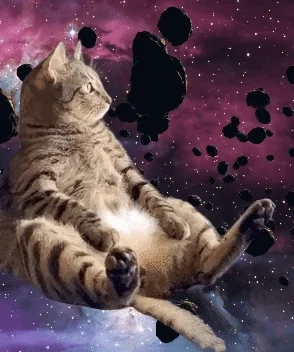

Денис был обычным парнем из Новороссийска. Он жил в небольшой квартире в центре города, работал на строительном предприятии и любил проводить время на морском побережье. Но в один обычный день его жизнь изменилась навсегда. Однажды, прогуливаясь по набережной, Денис наткнулся на старинную бутылку, закопанную в песке. Вынув ее, он обнаружил внутри свиток с загадочной надписью. Испытавший любопытство, Денис развернул свиток и прочел слова: "«А сегодня в завтрашний день не все могут смотреть. Вернее смотреть могут не только лишь все, мало кто может это делать» Эта загадочная фраза стала мучить Дениса. Что она могла значить? Он начал задумываться о своей жизни, о своих мечтах и желаниях. И тогда он понял, что истинная сила заключается в любви, дружбе и вере в себя. Денис решил изменить свою жизнь к лучшему. Он стал помогать нуждающимся, улучшать окружающую среду и стал более открытым и добрым человеком. Его друзья были поражены таким переменами в нем и поддержали его в этом нелегком пути. С каждым днем Денис становился все ближе к истине, которая проживала внутри него. Со временем он понял, что счастье не во внешних материальных достижениях, а внутренняя гармония и мир с самим собой являются ключами к истинному благополучию.
Тут я я катался на самокате
Открыл банку огурцов с 1 раза
Обучаюсь на Оракла!
Возглавил восстание обезьян
Мне говорили, что это обычная сигарета...
После первой тренировки в спортзале